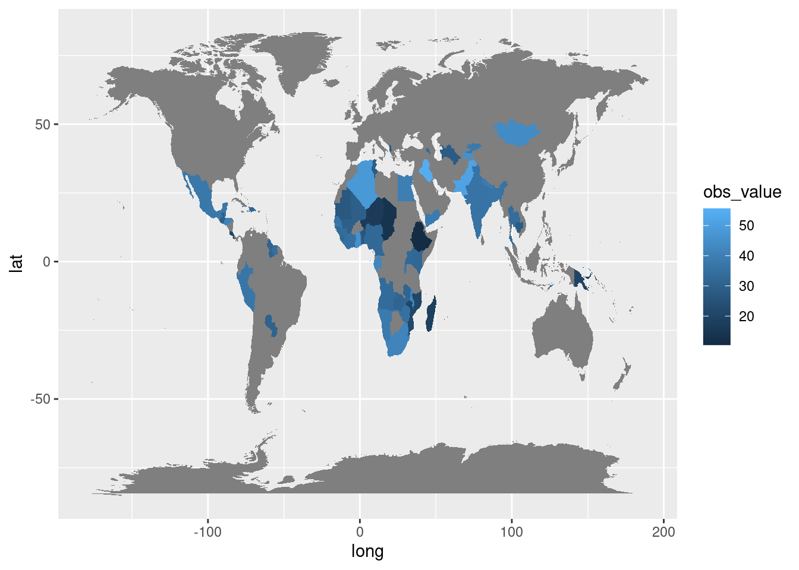
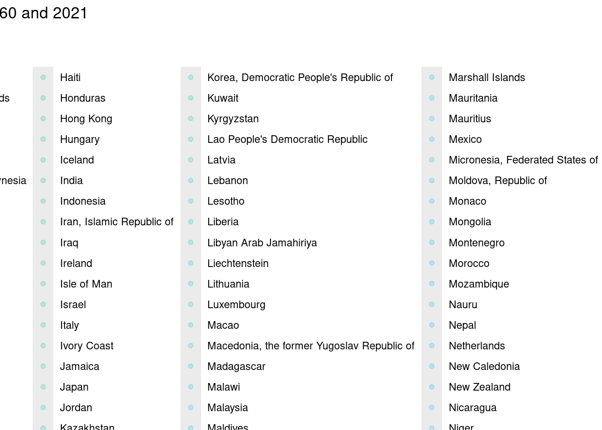
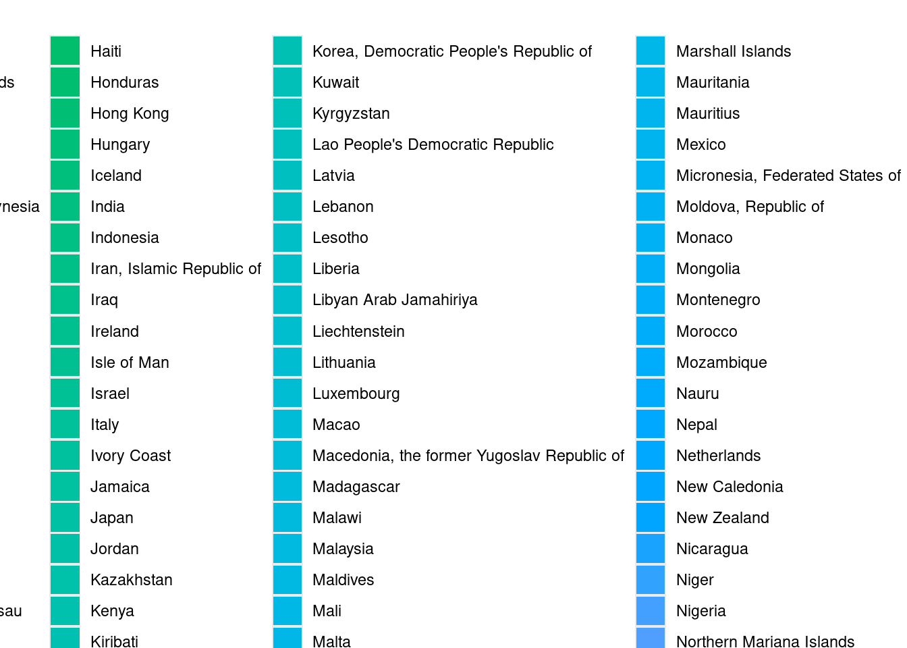

Understanding Child Deprivation and Societal Well-being
Exploring the Relationship Between child deprivation and other factors
Published
April 25, 2024
# Librarylibrary(tidyverse)
── Attaching core tidyverse packages ──────────────────────── tidyverse 2.0.0 ──
✔ dplyr 1.1.4 ✔ readr 2.1.5
✔ forcats 1.0.0 ✔ stringr 1.5.1
✔ ggplot2 3.5.0 ✔ tibble 3.2.1
✔ lubridate 1.9.3 ✔ tidyr 1.3.1
✔ purrr 1.0.2
── Conflicts ────────────────────────────────────────── tidyverse_conflicts() ──
✖ dplyr::filter() masks stats::filter()
✖ dplyr::lag() masks stats::lag()
ℹ Use the conflicted package (<http://conflicted.r-lib.org/>) to force all conflicts to become errors
library(plotly)
Attaching package: 'plotly'
The following object is masked from 'package:ggplot2':
last_plot
The following object is masked from 'package:stats':
filter
The following object is masked from 'package:graphics':
layout
library(countrycode)
# data unicef_indicator_1 <-read_csv("unicef_indicator_1.csv")
Rows: 216 Columns: 14
── Column specification ────────────────────────────────────────────────────────
Delimiter: ","
chr (7): country, alpha_2_code, alpha_3_code, indicator, sex, unit_of_measur...
dbl (3): numeric_code, time_period, obs_value
lgl (4): unit_multiplier, observation_status, observation_confidentaility, t...
ℹ Use `spec()` to retrieve the full column specification for this data.
ℹ Specify the column types or set `show_col_types = FALSE` to quiet this message.
Rows: 1358 Columns: 14
── Column specification ────────────────────────────────────────────────────────
Delimiter: ","
chr (9): country, alpha_2_code, alpha_3_code, indicator, sex, unit_multiplie...
dbl (3): numeric_code, time_period, obs_value
lgl (2): observation_status, time_period_activity_related_to_when_the_data_a...
ℹ Use `spec()` to retrieve the full column specification for this data.
ℹ Specify the column types or set `show_col_types = FALSE` to quiet this message.
unicef_metadata <-read_csv("unicef_metadata.csv")
Rows: 13293 Columns: 11
── Column specification ────────────────────────────────────────────────────────
Delimiter: ","
chr (3): country, alpha_2_code, alpha_3_code
dbl (8): numeric_code, year, Population, total, GDP per capita (constant 201...
ℹ Use `spec()` to retrieve the full column specification for this data.
ℹ Specify the column types or set `show_col_types = FALSE` to quiet this message.
Joining with `by = join_by(country, alpha_2_code, alpha_3_code, numeric_code)`
Warning in full_join(unicef_indicator_1, unicef_metadata): Detected an unexpected many-to-many relationship between `x` and `y`.
ℹ Row 1 of `x` matches multiple rows in `y`.
ℹ Row 64 of `y` matches multiple rows in `x`.
ℹ If a many-to-many relationship is expected, set `relationship =
"many-to-many"` to silence this warning.
Joining with `by = join_by(country, alpha_2_code, alpha_3_code, numeric_code)`
Warning in full_join(unicef_indicator_2, unicef_metadata): Detected an unexpected many-to-many relationship between `x` and `y`.
ℹ Row 1 of `x` matches multiple rows in `y`.
ℹ Row 1 of `y` matches multiple rows in `x`.
ℹ If a many-to-many relationship is expected, set `relationship =
"many-to-many"` to silence this warning.
map_world <-map_data("world")map_data_join <-full_join(unicef_indicator_1, map_world, by =c("country"="region"))
Warning in full_join(unicef_indicator_1, map_world, by = c(country = "region")): Detected an unexpected many-to-many relationship between `x` and `y`.
ℹ Row 1 of `x` matches multiple rows in `y`.
ℹ Row 765 of `y` matches multiple rows in `x`.
ℹ If a many-to-many relationship is expected, set `relationship =
"many-to-many"` to silence this warning.
ggplot(map_data_join) +aes(x = long, y = lat, group = group, fill = obs_value) +geom_polygon()

The world map illustrates life expectancy variations across regions, with darker colors indicating shorter life expectancies. This visual representation highlights global disparities in health outcomes, emphasizing areas with lower life expectancies. This information provides valuable insights into regional health patterns and informs further analysis of factors influencing longevity worldwide.
This time series visualization depicts the population growth from 1960- 2022 across multiple countries. Each line represents a different country, showcasing how their populations have evolved over time. The x-axis denotes the years, while the y-axis represents the total population count. The plot highlights the trends and fluctuations in population size over the specified period, offering insights into the demographic dynamics of various nations.
ggplot(unicef_metadata) +aes(unicef_metadata[["GDP per capita (constant 2015 US$)"]], unicef_metadata[["Life expectancy at birth, total (years)"]], color = country, size = unicef_metadata[["Population, total"]]) +geom_point(alpha =0.2) +facet_wrap(~ year) +scale_x_continuous(limits =c(0, 50000),breaks =c(20000, 40000)) +labs(x ="GDP per capita (constant 2015 US$)",y ="Life expectancy at birth, total (years)",title ="Evolution of the relationship between GDP per capita and Life expectancy at birth between 1960 and 2021" )
Warning: Removed 4074 rows containing missing values or values outside the scale range
(`geom_point()`).

The scatterplot illustrates the correlation between GDP per capita and life expectancy at birth across countries from 1960 to 2021. Each point represents a country, with GDP per capita on the x-axis and life expectancy on the y-axis. Point color denotes country, while size reflects population size. This visualization allows for the examination of trends in the relationship between economic prosperity and health outcomes over time.
unicef_metadata %>%group_by(country, year) %>%summarise(m_lifeexp =mean(unicef_metadata[["Life expectancy at birth, total (years)"]], na.rm =TRUE)) %>%ggplot() +aes(country, m_lifeexp, fill = country) +geom_col() +facet_wrap(~ year) +labs(x ="Country",y ="Mean Life Expectancy",title ="Evolution of the life expectancy between 1960 and 2021")
`summarise()` has grouped output by 'country'. You can override using the
`.groups` argument.

The bar chart illustrates the changing trends in life expectancy across countries from 1960 to 2021. Each bar represents the mean life expectancy for a country in a specific year, offering a snapshot of how life expectancy has evolved over time. By comparing bars across different years, patterns in life expectancy can be discerned, providing insights into global health trends and disparities.